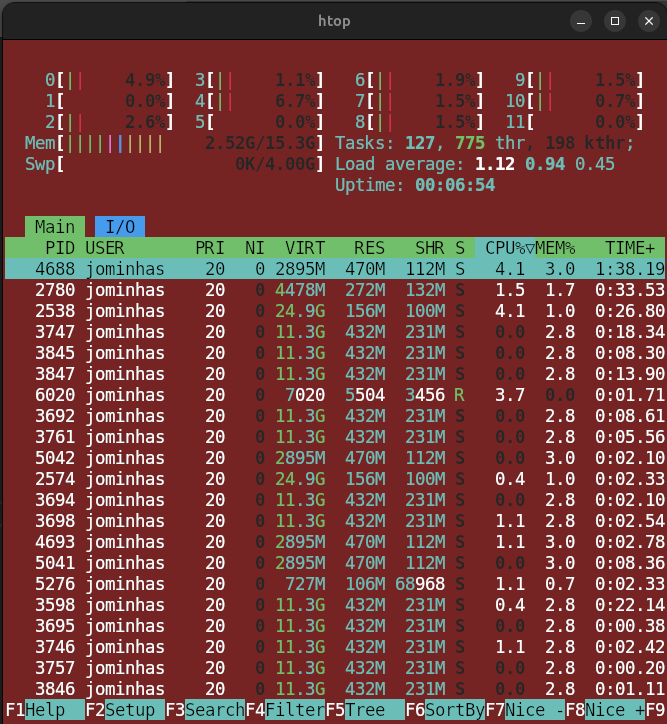

Recentemente, comecei a usar Linux e escolhi o Ubuntu como minha primeira distribuição. Foi uma mudança empolgante! Desde a instalação até a configuração inicial, fiquei impressionado com a simplicidade e a flexibilidade do sistema. A interface é limpa, responsiva e, para quem vem do Windows, a adaptação foi bem tranquila.
Algo que me chamou muito a atenção foi a praticidade de instalar pacotes e programas diretamente pelo terminal. Com poucos comandos, eu conseguia instalar e configurar o que precisava de maneira rápida e eficiente.
Aqui estão algumas ferramentas que explorei:
Docker 🐳: Facilita a criação e gerenciamento de containers, essencial para desenvolvimento e testes.
Conda 🐍: Um gerenciador de pacotes e ambientes que ajudou muito na organização dos meus projetos de bioinformática.
Git 🔧: Indispensável para controle de versão e gerenciamento dos meus repositórios.
A instalação foi bem simples:
sudo apt update && sudo apt upgrade -y
sudo apt install docker.io gitE para o Conda:
wget https://repo.anaconda.com/miniconda/Miniconda3-latest-Linux-x86_64.sh
bash Miniconda3-latest-Linux-x86_64.shOutro ponto que me agradou bastante foi a possibilidade de personalizar o ambiente de acordo com as minhas necessidades. Comecei a usar o terminal Kitty (tem um post no blog que relata melhor minha experiencia até o momento com o terminal), que oferece uma interface mais rápida e personalizável. Além disso, pude ajustar algumas configurações no .bashrc para tornar minha experiência ainda melhor.
post Kitty: Terminal Kitty e suas possibilidades
Explorar o Ubuntu tem sido uma experiência cheia de aprendizados. Cada novo comando e nova ferramenta que descubro torna o sistema ainda legal e adaptável às minhas necessidades. O que mais me surpreende é a sensação de controle e liberdade que o Linux proporciona. Saber que posso modificar praticamente qualquer aspecto do meu ambiente de trabalho deixa ainda mais empolgante.